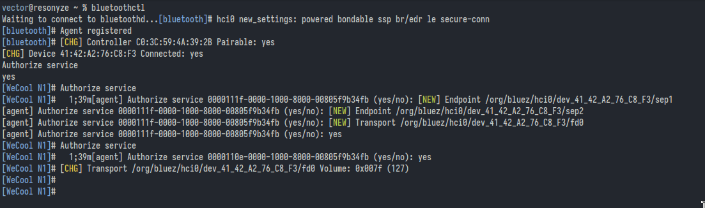
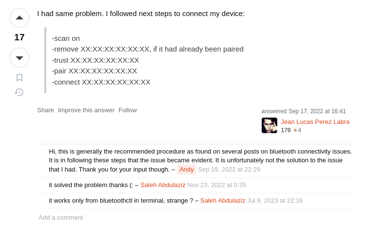
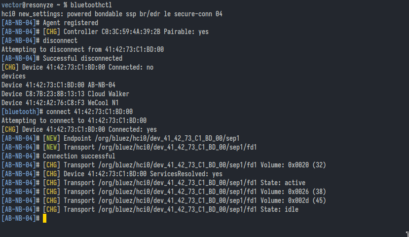
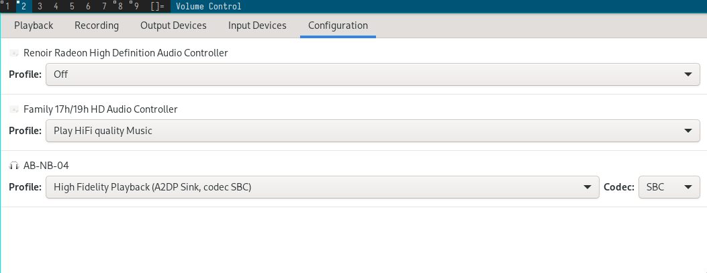
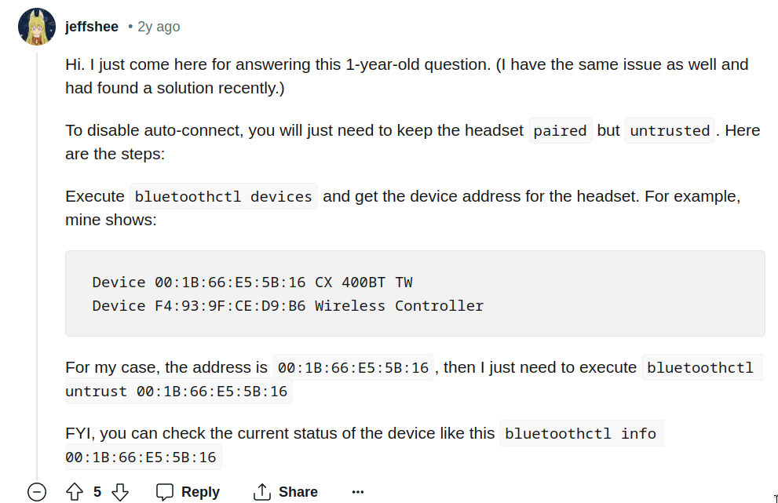

bluetoothctl
From archlinux wiki:
Connecting to device later on.
agent KeyboardOnly
default-agent
power on
devices # shows the devices and their address
connect *address*
Sometimes, when you switch on the bluetooth device you get prompt at blutoothctl shell
whether you want to connect or not. In this case you don't need connect *address*

vector@resonyze ~ % bluetoothctl
Waiting to connect to bluetoothd.
[bluetooth]# Agent registered
[bluetooth]# [CHG] Controller CO:3C:59:
[CHG] Device 4 g
Authorize service
yes
[WieCool N1]# Authorize service
[WeCool N11# 1;39m[agent] Authorize service B088111f-8006-1008-8008-00885¢9b34Fb (yes/no): [NEW] Endpoint /org/bluez/hci/dev_41.42_A2_76_C8_F3/sepl
[agent] Authorize service B088111f-0006-1006-8006-0888579b34Fb (yes/no): [NEW] Endpoint /org/bluez/hcib/dev_41_42_A2_76_C8_F3/sep2
[agent] Authorize service B088111f-006-100-8006-0888579b34Fb (yes/no): [NEW] Transport /org/bluez/hci6/dev_41_42_A2.76_C8_F3/dB
[agent] Authorize service 809111-0880-1808-3086-8030579b34fb (yes/no): yes
[WeCool N1]# Authorize service
[WeCool N1]# 1;39m[agent] Authorize service B088118e-0006-1006-8006-088579b34Fb (yes/no): yes
[WeCool N1]# [CHG] Transport /org/bluez/hcib/dev_4142_A2_76_C8_F3/fd8 Volue: 8x007f (127)
[WeCool N1]#
[WeCool N1]#
bluetooth]# hcid new_settings: powered bondable ssp br/edr le secure-conn
:28 Pairable: yes
Attempt at pairing amazon basics bluetooth neckband.
Update
I realized I could press power button + volume down in the neckband and it enters a pairing mode. When the pairing mode is active, the device turned up in bluetoothctl prompt.
Yeah. RTFM moment for me. But I still havent' read the manual though. I can't find it. Oh well.
Old way
Date: 02/17/2024
It was a pain in the ass to connect this device with bluetoothctl. I did the
usual stuff in bluetoothctl:
From this point I kept staring at the prompt for notification of device discovery. It comes, but then pairing fails for some reason. Then I do the following:
And then Ctrl-d out of bluetoothctl. Repeat the afforementioned usual stuff.
Nothing.
Then by accident my phone which I connected to the charging cable nearby
connects to the device. I turn of its bluetooth. THEN the device address turns
up at the at bluetootctl prompt. Then I did:
It works. For some reason it worked now though before it didn't. Finalized with
I hope its gonna be smooth sailing from this point because the device is now
listed with devices command at bluetoothctl prompt.
related: switch audio sink
Solution to failed attempt at reconnecting to a previously paired device

Poor sound quality
Update on sound quality
I followed the instructions at https://wiki.archlinux.org/title/PipeWire#Low_audio_quality_on_Bluetooth and did the following:
/usr/share/pipewire/media-session.d/bluez-monitor.conf:
# Bluez monitor config file for PipeWire version 0.4.2 #
#
# Copy and edit this file in /etc/pipewire/media-session.d/
# for system-wide changes or in
# ~/.config/pipewire/media-session.d/ for local changes.
properties = {
# These features do not work on all headsets, so they are enabled
# by default based on the hardware database. They can also be
# forced on/off for all devices by the following options:
bluez5.enable-sbc-xq = true
bluez5.enable-msbc = true
#bluez5.enable-hw-volume = true
#bluez5.enable-faststream = true
# See bluez-hardware.conf for the hardware database.
# Enabled headset roles (default: [ hfp_hf hfp_ag ]), this
# property only applies to native backend. Currently some headsets
# (Sony WH-1000XM3) are not working with both hsp_ag and hfp_ag
# enabled, disable either hsp_ag or hfp_ag to work around it.
#
# Supported headset roles: hsp_hs (HSP Headset),
# hsp_ag (HSP Audio Gateway),
# hfp_hf (HFP Hands-Free),
# hfp_ag (HFP Audio Gateway)
#bluez5.headset-roles = [ hsp_hs hsp_ag hfp_hf hfp_ag ]
# Enabled A2DP codecs (default: all).
bluez5.codecs = [ sbc sbc_xq aac ldac aptx aptx_hd aptx_ll aptx_ll_duplex faststream faststream_duplex ]
# HFP/HSP backend (default: native).
# Available values: any, none, hsphfpd, ofono, native
#bluez5.hfphsp-backend = native
# HFP/HSP native backend modem (default: none).
# Available values: none, any or the modem device string as found in
# 'Device' property of org.freedesktop.ModemManager1.Modem interface
#bluez5.hfphsp-backend-native-modem = none
# Properties for the A2DP codec configuration
#bluez5.default.rate = 48000
#bluez5.default.channels = 2
# Register dummy AVRCP player, required for AVRCP volume function.
# Disable if you are running mpris-proxy or equivalent.
#bluez5.dummy-avrcp-player = true
}
rules = [
# An array of matches/actions to evaluate.
{
# Rules for matching a device or node. It is an array of
# properties that all need to match the regexp. If any of the
# matches work, the actions are executed for the object.
matches = [
{
# This matches all cards.
device.name = "~bluez_card.*"
}
]
actions = {
# Actions can update properties on the matched object.
update-props = {
# Auto-connect device profiles on start up or when only partial
# profiles have connected. Disabled by default if the property
# is not specified.
#bluez5.auto-connect = [
# hfp_hf
# hsp_hs
# a2dp_sink
# hfp_ag
# hsp_ag
# a2dp_source
#]
bluez5.auto-connect = [ hfp_hf hsp_hs a2dp_sink ]
# bluez5.auto-connect = [ a2dp_sink ]
# Hardware volume control (default: all)
#bluez5.hw-volume = [
# hfp_hf
# hsp_hs
# a2dp_sink
# hfp_ag
# hsp_ag
# a2dp_source
#]
# LDAC encoding quality
# Available values: auto (Adaptive Bitrate, default)
# hq (High Quality, 990/909kbps)
# sq (Standard Quality, 660/606kbps)
# mq (Mobile use Quality, 330/303kbps)
# bluez5.a2dp.ldac.quality = auto
bluez5.a2dp.ldac.quality = hq
# AAC variable bitrate mode
# Available values: 0 (cbr, default), 1-5 (quality level)
#bluez5.a2dp.aac.bitratemode = 0
# Profile connected first
# Available values: a2dp-sink (default), headset-head-unit
bluez5.profile = a2dp-sink
# A2DP <-> HFP profile auto-switching (when device is default output)
# Available values: false, role (default), true
# 'role' will switch the profile if the recording application
# specifies Communication (or "phone" in PA) as the stream role.
# bluez5.autoswitch-profile = role
bluez5.autoswitch-profile = false
}
}
}
{
matches = [
{
# Matches all sources.
node.name = "~bluez_input.*"
}
{
# Matches all sinks.
node.name = "~bluez_output.*"
}
]
actions = {
update-props = {
#node.nick = "My Node"
#node.nick = null
#priority.driver = 100
#priority.session = 100
node.pause-on-idle = false
#resample.quality = 4
#channelmix.normalize = false
#channelmix.mix-lfe = false
#session.suspend-timeout-seconds = 5 # 0 disables suspend
#monitor.channel-volumes = false
# Media source role, "input" or "playback"
# Defaults to "playback", playing stream to speakers
# Set to "input" to use as an input for apps
#bluez5.media-source-role = input
}
}
}
]
Try disconnecting and reconnecting.
Disconnected and reconnected.

pavucontrol
This might be useful. Sound quality is good when profile is A2DP sink.

Update 10/03/2024: Replaced piepwire-session-manager with wireplumber
I switched to wireplumber.
sudo pacman -R pipewire-session-manager
sudo pacman -S wireplumber
sudo mkdir -p /etc/wireplumber/bluetooth.lua.d
sudo cp /usr/share/wireplumber/bluetooth.lua.d/50-bluez-config.lua /etc/wireplumber/bluetooth.lua.d/
Now /etc/wireplumber/bluetooth.lua.d/50-bluez-config.lua looks like:
bluez_monitor.enabled = true
bluez_monitor.properties = {
-- Enabled roles (default: [ a2dp_sink a2dp_source bap_sink bap_source hfp_hf hfp_ag ])
--
-- Currently some headsets (Sony WH-1000XM3) are not working with
-- both hsp_ag and hfp_ag enabled, so by default we enable only HFP.
--
-- Supported roles: hsp_hs (HSP Headset),
-- hsp_ag (HSP Audio Gateway),
-- hfp_hf (HFP Hands-Free),
-- hfp_ag (HFP Audio Gateway)
-- a2dp_sink (A2DP Audio Sink)
-- a2dp_source (A2DP Audio Source)
-- bap_sink (LE Audio Basic Audio Profile Sink)
-- bap_source (LE Audio Basic Audio Profile Source)
--["bluez5.roles"] = "[ a2dp_sink a2dp_source bap_sink bap_source hsp_hs hsp_ag hfp_hf hfp_ag ]",
-- Enabled A2DP codecs (default: all).
--["bluez5.codecs"] = "[ sbc sbc_xq aac ldac aptx aptx_hd aptx_ll aptx_ll_duplex faststream faststream_duplex ]",
-- HFP/HSP backend (default: native).
-- Available values: any, none, hsphfpd, ofono, native
--["bluez5.hfphsp-backend"] = "native",
-- HFP/HSP native backend modem (default: none).
-- Available values: none, any or the modem device string as found in
-- 'Device' property of org.freedesktop.ModemManager1.Modem interface
--["bluez5.hfphsp-backend-native-modem"] = "none",
-- HFP/HSP hardware offload SCO support (default: false).
--["bluez5.hw-offload-sco"] = false,
-- Properties for the A2DP codec configuration
--["bluez5.default.rate"] = 48000,
--["bluez5.default.channels"] = 2,
-- Register dummy AVRCP player, required for AVRCP volume function.
-- Disable if you are running mpris-proxy or equivalent.
--["bluez5.dummy-avrcp-player"] = true,
-- Opus Pro Audio mode settings
--["bluez5.a2dp.opus.pro.channels"] = 3, -- no. channels
--["bluez5.a2dp.opus.pro.coupled-streams"] = 1, -- no. joint stereo pairs, see RFC 7845 Sec. 5.1.1
--["bluez5.a2dp.opus.pro.locations"] = "FL,FR,LFE", -- audio locations
--["bluez5.a2dp.opus.pro.max-bitrate"] = 600000,
--["bluez5.a2dp.opus.pro.frame-dms"] = 50, -- frame duration in 1/10 ms: 25, 50, 100, 200, 400
--["bluez5.a2dp.opus.pro.bidi.channels"] = 1, -- same settings for the return direction
--["bluez5.a2dp.opus.pro.bidi.coupled-streams"] = 0,
--["bluez5.a2dp.opus.pro.bidi.locations"] = "FC",
--["bluez5.a2dp.opus.pro.bidi.max-bitrate"] = 160000,
--["bluez5.a2dp.opus.pro.bidi.frame-dms"] = 400,
-- Enable the logind module, which arbitrates which user will be allowed
-- to have bluetooth audio enabled at any given time (particularly useful
-- if you are using GDM as a display manager, as the gdm user also launches
-- pipewire and wireplumber).
-- This requires access to the D-Bus user session; disable if you are running
-- a system-wide instance of wireplumber.
["with-logind"] = true,
-- The settings below can be used to override feature enabled status. By default
-- all of them are enabled. They may also be disabled via the hardware quirk
-- database, see bluez-hardware.conf
--["bluez5.enable-sbc-xq"] = true,
--["bluez5.enable-msbc"] = true,
--["bluez5.enable-hw-volume"] = true,
}
bluez_monitor.rules = {
-- An array of matches/actions to evaluate.
{
-- Rules for matching a device or node. It is an array of
-- properties that all need to match the regexp. If any of the
-- matches work, the actions are executed for the object.
matches = {
{
-- This matches all cards.
{ "device.name", "matches", "bluez_card.*" },
},
},
-- Apply properties on the matched object.
apply_properties = {
-- Auto-connect device profiles on start up or when only partial
-- profiles have connected. Disabled by default if the property
-- is not specified.
--["bluez5.auto-connect"] = "[ hfp_hf hsp_hs a2dp_sink hfp_ag hsp_ag a2dp_source ]",
["bluez5.auto-connect"] = "[ a2dp_sink ]",
-- Hardware volume control (default: [ hfp_ag hsp_ag a2dp_source ])
--["bluez5.hw-volume"] = "[ hfp_hf hsp_hs a2dp_sink hfp_ag hsp_ag a2dp_source ]",
-- LDAC encoding quality
-- Available values: auto (Adaptive Bitrate, default)
-- hq (High Quality, 990/909kbps)
-- sq (Standard Quality, 660/606kbps)
-- mq (Mobile use Quality, 330/303kbps)
--["bluez5.a2dp.ldac.quality"] = "auto",
-- AAC variable bitrate mode
-- Available values: 0 (cbr, default), 1-5 (quality level)
--["bluez5.a2dp.aac.bitratemode"] = 0,
-- Profile connected first
-- Available values: a2dp-sink (default), headset-head-unit
--["device.profile"] = "a2dp-sink",
-- Opus Pro Audio encoding mode: audio, voip, lowdelay
--["bluez5.a2dp.opus.pro.application"] = "audio",
--["bluez5.a2dp.opus.pro.bidi.application"] = "audio",
},
},
{
matches = {
{
-- Matches all sources.
{ "node.name", "matches", "bluez_input.*" },
},
{
-- Matches all sinks.
{ "node.name", "matches", "bluez_output.*" },
},
},
apply_properties = {
--["node.nick"] = "My Node",
--["priority.driver"] = 100,
--["priority.session"] = 100,
--["node.pause-on-idle"] = false,
--["resample.quality"] = 4,
--["channelmix.normalize"] = false,
--["channelmix.mix-lfe"] = false,
--["session.suspend-timeout-seconds"] = 5, -- 0 disables suspend
--["monitor.channel-volumes"] = false,
-- Media source role, "input" or "playback"
-- Defaults to "playback", playing stream to speakers
-- Set to "input" to use as an input for apps
--["bluez5.media-source-role"] = "input",
},
},
}
Disable auto-connect
source: https://www.reddit.com/r/Fedora/comments/iwzct5/comment/hxo9kej

I noticed that my wecool n1 neckband requests approval before connecting but it always connect with the right profile (a2dp_sink), like so:
But my amazon basics neckband connects automatically but with incorrect profile (hsp/hfp). So I tried to disable autoconnect for the neckband expecting then it would connnect with a2dp_sink.
This is possible if you pair the device but don't trust it. Since AB neckband was already paired, I did untrust device in bluetoothctl prompt and rebooted it:
Now it requests permission to connect but it is connecting with the right profile.